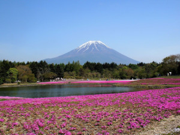
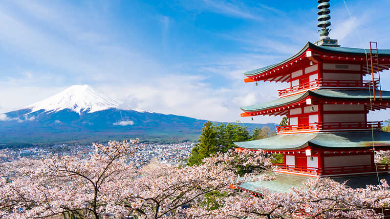
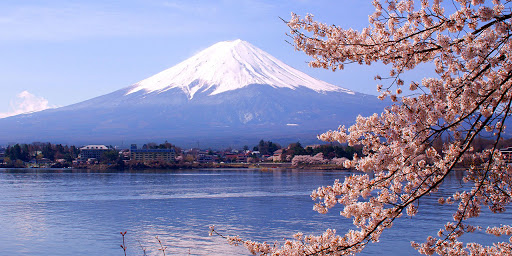

Fu (富) significa 'riqueza', mientras que ji (士) es 'samurái'. Finalmente, san (山) significa 'montaña', por lo que el nombre completo es Fujisan —aunque popularmente en países de habla castellana se le conoce como «Fujiyama».

Con 3776 metros de altitud, es el pico más alto de la isla de Honshu y de todo Japón. Se encuentra entre las prefecturas de Shizuoka y Yamanashi en el Japón central y justo al oeste de Tokio, desde donde se puede observar en un día despejado.
|  |
|  | Se clasifica al monte Fuji como un volcán activo, pero con poco riesgo de erupción. La última erupción registrada data de 1707, durante el periodo Edo. Entonces, se formó un nuevo cráter, así como un segundo pico (llamado Hoeizan por el nombre de la era).
|
El monte Fuji es un atractivo cono volcánico y es un tema recurrente en el arte japonés. El trabajo con mayor renombre es la obra maestra 36 vistas del monte Fuji del pintor ukiyo-e Katsushika Hokusai. También aparece en la literatura japonesa y es el tema de muchos poemas.
|  |
Fu (富) significa 'riqueza', mientras que ji (士) es 'samurái'. Finalmente, san (山) significa 'montaña', por lo que el nombre completo es Fujisan —aunque popularmente en países de habla castellana se le conoce como «Fujiyama».
|
|